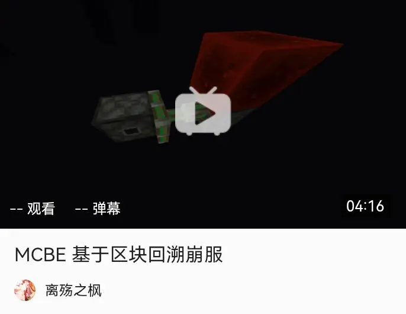
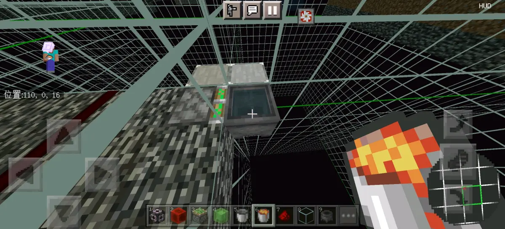
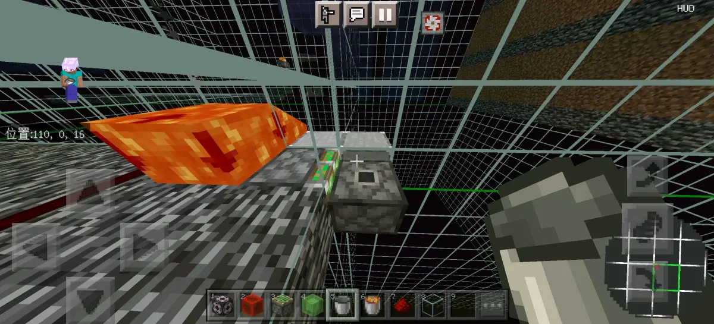
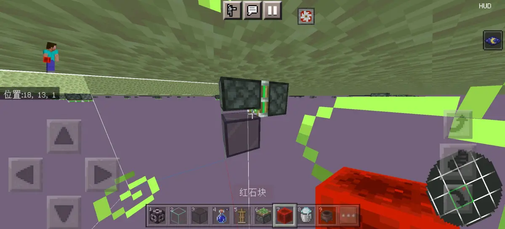
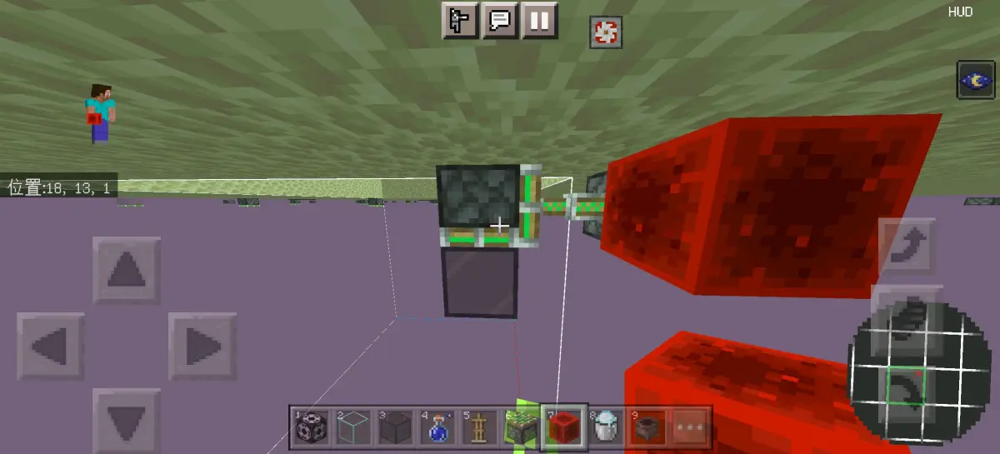
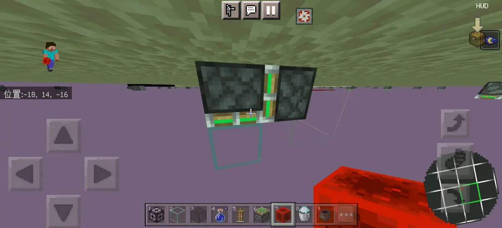
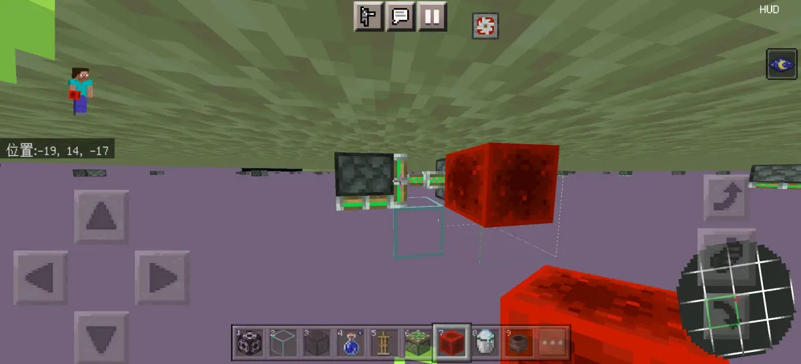
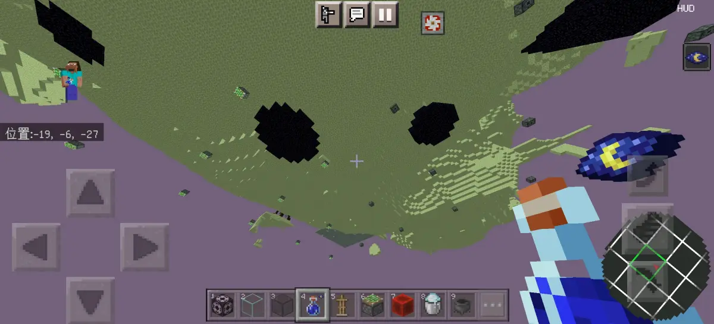
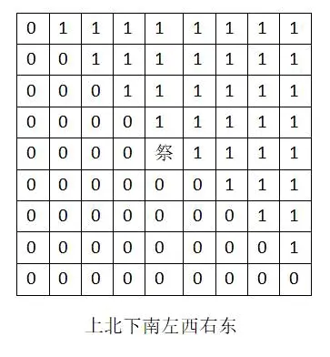

首先，关于区块回溯崩服的原理，这个视频里面有部分展示，但是并不全面

B 站视频 »完整一点讲，大概就是，部分方块本身是可以带有nbt标签的，比如活塞刷怪笼箱子漏斗发射器等等，这些在电脑上你也可以通过Ctrl+中键连带着nbt标签一起复制
然后当区块回溯了这些可以带有nbt标签的物品時（不一定要已经带了标签，直接放下来的常态也行）
如果这个回朔的区块是处于合适的范围内，那么，将其拉回的时候就会导致服务器崩溃
然后如何判断你回溯出来的是否是在合适的位置呢，就需要用那种在是否合适的位置，外观有明显不同的方块，最典型的就是活塞和炼药锅


当炼药锅里面装有东西的情况下回溯，不管装的是什么，回溯之后都会变成水的贴图，活塞的话就是不管有没有激活，回溯之后都是无头的状态，但这两个还是有区别
炼药锅那个是否在合适的位置进行回溯除了是否会崩服之外，仅仅是贴图不同，但是活塞这个在不同的位置是真的不同，在会崩服的地方，回溯出来的这种无头活塞，是你把它推动的一定会带着前面那个方块一起动，当然前提是能带的动


但是在不会崩服的地方，回溯出来的，那就单纯的只是一个收回的活塞而已，最多还包括前面那个一更新就消失的活塞臂，问题不大


行吧，总之讲了这么多，就是说明一点，可以利用回溯之后的活塞是否是有头的贴图状态来判断拉回这个区块内进行回溯的nbt方块是否会导致崩服（准确性不用质疑，经过测试确实是一致的），问题不大
顺便先说一下区块回溯的发生条件，能稳定触发的主世界之前不知道有没有，反正现在难有，不过地狱和末地是可以稳定触发的，目前我们测试的条件就是，该区块16层以下，也就是第一区段全部清空，然后重新加载这个区块，可以是切换维度或者退出重进之类的，然后这个区块就会回溯到上一次保存的情况，问题不大
然后就是分享一下，这里的测试结果，下来看一下测试的一点遗留下来的，能看到活塞头的就是不能崩服的，看不到的就是可以的，问题不大

然后我们这里是测试以末地的祭坛为中心，9×9区块范围内的情况（当然先确定了同一个区块内效果都是一样的），绘制成表格大概就是这样，问题不大

0代表的就是拉回回溯出来的nbt方块不能崩服，1代表的则是可以崩服，大概就是以东北和西南的对角斜线为轴，靠近东北的部分就是可以崩服的，靠近西南的部分以及斜线本身所在的区块就是不能崩服的
这个我们之后又在一些比较坐标大的地方随机抽查了一些位置，也确实同样符合这个规律，之后我们又在地狱也进行了测试，也同样符合这个规律，所以大概能说明这个规律是正确的，问题不大
不过就是有点好奇，为什么会分为这两种不同的情况？以及两者的区别，真的就只是拉回是否能崩服这一点吗？但是这个我们也不太懂，所以只能测到这种程度了，问题不大
行吧，那就这样，我们也只是把我们自己的测试结果以及能总结的部分总结一下分享出来而已，主要我们也不太擅长这方面，所以也只能做到这样，那就这样吧，到此结束，问题不大